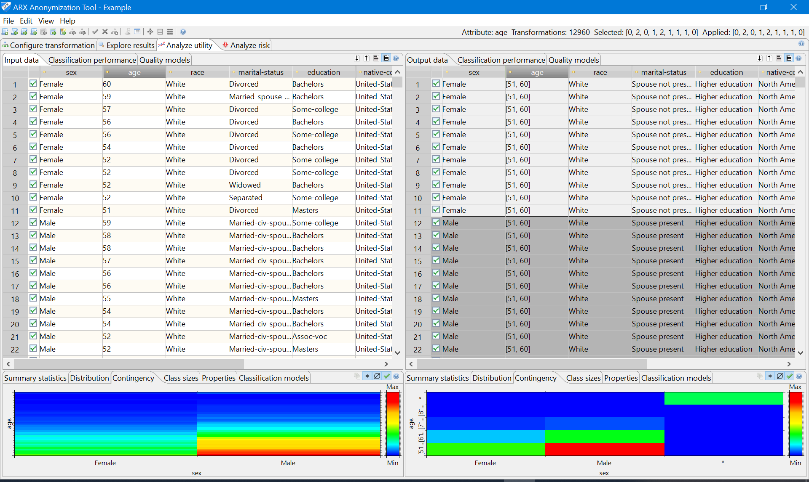

The utility analysis perspective can be used to assess the suitability of a specific transformation for an anticipated usage scenario. For this purpose, input and transformed data are displayed side by side. Moreover, descriptive statistics can be calculated and the suitability of output data as a training set for creating classification models can be analyzed. A variety of graphical and numerical representations are displayed to aid interpretation.
The utility analysis perspective also provides a view which can be used to apply local transformation to the output dataset. Please note that this functionality is typically not needed in ARX 3.7.0 or later and it may be removed in the future.